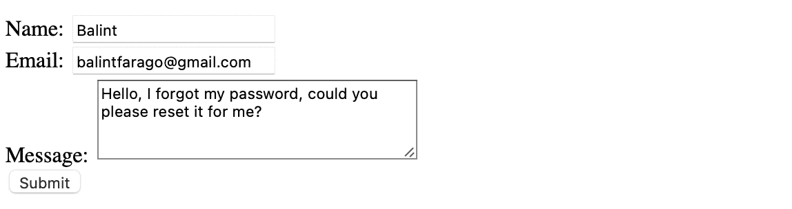
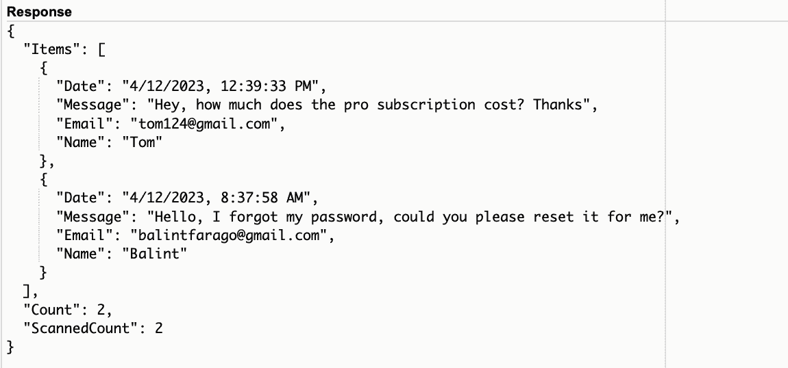

In this tutorial we're going to create a simple form on a dummy website and send the data to our backend Lambda function that puts it into DynamoDB. We're going the extra mile and we'll read and display the DynamoDB records on our frontend, too.
Table of contents:
Open the DynamoDB console and click Create table.
Name your table Messages. I'm going to use Name as the Partition key and Date as the Sort key to enable multiple messages from the same person. Select Customize settings for Table settings and select DynamoDB Standard table. For the Read/Write capacity settings select On-demand. Click Create table.
Open the Lambda console and click Create function.
Provide a name for your function (I named mine writeToMessagesTable, select Node.js 16.x as Runtime environment and click Create function.
Once the function is created, select the Configuration tab and click the role's name. You are taken to IAM where you'll need to provide permission to your role to access DynamoDB. Click Create policy and use the Visual Editor to provide the read and write roles as well as the ARN of your DynamoDB table:
Click Review policy, name the policy and click Create policy. I named mine ReadWriteDynamoDBTableMessages. Now the IAM role of the Lambda function has a default LambdaExecution role and another one created by us.
It's time to do some coding! Add the following code to your Lambda function:
console.log('starting function');
const AWS = require('aws-sdk');
const docClient = new AWS.DynamoDB.DocumentClient({region: 'eu-north-1'});
exports.handler = function(e, ctx, callback) {
var params = {
Item: {
Name: "Balint",
Date: new Date().toLocaleString()
},
TableName: 'Messages'
};
docClient.put(params, function(err, data) {
if(err){
callback(err, null);
}else{
callback(null, data);
}
});
}
Click Deploy. To send a test event, click Test and configure the test event with the 2 test data (Name and Date). Click Test again to send the event. Since the data is hardcoded in the code, the test data provided in the test event is ignored. Lambda will send the hardcoded values to DynamoDB.
Let's check DynamoDB:
The record should be created. All right, now we have a Lambda function that connects to and writes into a DynamoDB database. It's time to create the frontend of the application and call this Lambda function from the browser.
Open the API Gateway console. Click Create API and from the options select REST API.
Provide a name for your API (I named mine customer_message) and click Create API.
From the Actions list select Create Resource. Provide a name (I named mine messages) and click Create Resource.

Since we only want to send information to AWS, we will only use a POST method. From the Actions list select Create Method. Select Lambda function as Integration type, select your region and provide the Lambda function you're going to use for adding records to your database. Click Save.
Let's go to Integration Request, and in Mapping Templates add a new one and type “application/json”. Now tell the gateway to pass along a message by adding this to the textbox:
{
"Name": $input.json('$.Name')
}
Now in the resource list select the /messages item, and from the Actions list select Enable CORS. This enables your front-end code to call this API. For simplicity, keep everything as it is and click Enable CORS and replace existing CORS headers. Note that by providing a wildcard in the Access-Control-Allow-Origin* allows this API to be called from any domain, which something you should normally not do. You'll probably create your .html file first on your computer, so you can leave it as that.

Now go to the root resource marked by a '/' and from the Actions list select Deploy API. Select [New Stage] for the Deployment Stage, provide a Stage Name like prod and click Deploy.
Now we have an invoke URL we can add to our front-end javascript code. But before we do that, remember that in the current Lambda function we hardcoded the values we are putting into DynamoDB. So change this line:
to this:
Name: e.Name,
This is going to fetch the name the API Gateway gives to our Lambda function. If you forget where your Invoke URL is, just select the Stages on the left pane in API Gateway console, click prod then click messages.
Finally we can create the front-end of our application. For starters, let's create an input element, a button and a small jquery code with an ajax call that calls our API with the help the Invoke URL provided by the API Gateway console after we deployed the API. Note that the Invoke URL is ending with messages.
<!DOCTYPE html>
<html lang="en">
<body>
<script src="https://ajax.googleapis.com/ajax/libs/jquery/3.1.0/jquery.min.js"></script>
<script type="text/javascript">
var API_URL = 'https://487c3maln9.execute-api.eu-north-1.amazonaws.com/prod/messages';
$(document).ready(function() {
$('#submitButton').click(function(e) {
e.preventDefault();
$.ajax({
type: 'POST',
url: API_URL,
data: JSON.stringify({"Name": $('#name').val()}),
contentType: "application/json",
success: function(data) {
console.log("Success writing to DynamoDB");
}
});
return false; //without this, the page will be refreshed before the ajax request is completed
});
});
</script>
<form>
<label for="name">Message
<textarea id="name">
<button type="button" id="submitButton">Submit
</form>
</body>
</html>
Let's type something in the field and click Submit. Make sure to check that the success message is written to the console. After that let's check if the record was created in DynamoDB.
Let's add 2 more fields to the form: One for the email address and another for the message. HTML code:
<form>
<label for="name">Name:</label>
<input id="name"></input><br/>
<label for="email">Email:</label>
<input id="email"></input><br/>
<label for="message">Message:</label>
<textarea id="message" rows="4" cols="30"></textarea><br/>
<button type="button" id="submitButton">Submit</button>
</form>
Change the data block of the ajax call to this:
data: JSON.stringify({
"Name": $('#name').val(),
"Email": $('#email').val(),
"Message": $('#message').val()
}),
Let's change the message template in the API Gateway and don't forget to the Deploy the API!
{
"Name": $input.json('$.Name'),
"Email": $input.json('$.Email'),
"Message": $input.json('$.Message')
}
Finally, let's add these 2 fields to our Lambda function as well then click Deploy:
var params = {
Item: {
Name: e.Name,
Email: e.Email,
Message: e.Message,
Date: new Date().toLocaleString()
},
TableName: 'Messages'
};
Let's see the result now:
Now that we built a simple webapp that writes messages to a DynamoDB table, we can go one step further and read and display all those messages on our frontend.
Let's add the code for reading the data to our .html file. Put this button and div under our form:
<button type="button" id="showMessagesButton">Show Messages</button>
<div id="entries">
</div>
Then add another button click listener to our javascript code:
$('#showMessagesButton').click(function(e) {
e.preventDefault();
$.ajax({
type: 'GET',
url: API_URL,
success: function(data) {
$('#entries').html('');
data.Items.forEach(function(messageItem) {
$('#entries').append('' + messageItem.Message + '
');
})
}
});
return false; //without this, the page will be refreshed before the ajax request is completed
});
Note that in messageItem.Message, the first letter of "Message" is capital. This is important, because the attribute name in the table also starts with capital M.
Let's create another Lambda function that reads the data from DynamoDB. I named mine readFromMessagesTable and I assigned the same role we used earlier, because it already has write and read access.
The code is almost identical to the previous function that we wrote except that it uses a scan instead of a put and it uses a different parameter object. Note that we're using a scan option, which is very expensive in DynamoDB because scanning means that DynamoDB loops over all the items in the table. Though for this tutorial, with only a few records, it's fine.
console.log('starting read function');
const AWS = require('aws-sdk');
const docClient = new AWS.DynamoDB.DocumentClient({region: 'eu-north-1'});
exports.handler = function(e, ctx, callback) {
console.log(e);
let params = {
TableName: 'Messages',
Limit: 10
}
docClient.scan(params, function(err, data) {
if(err){
callback(err, null);
}else{
callback(null, data);
}
});
}
"Limit: 10" means we want to the latest 10 messages. Before moving on, let's test it:
All right, it reads the 2 messages I now have in the database. Let's modify the API. Note that in the javascript code above we're using the same API we used for writing data into the database. There's no need to create a separate API. We already have a POST method for sending data to AWS resources. Now let's create a GET method for receiving data from them.
From the Actions list select the GET option, select Lambda function as the Integration type, select your region and provide the name of our newly created Lambda function. Click Save and don't forget to Deploy!
All right, let's test it!
There we go. Should you want to get further attributes from DynamoDB, just use messageItem.Name or messageItem.Email in the javascript code.
One more thing. Like I said, scanning the whole table is an expensive operation. In DynamoDB when you want to query for an item, you need to provide it's primary key. In this example I used a partition key and a sort key to create a composite primary key hence I need to use both in the code to get a specific item:
var params = {
TableName: 'Messages',
Key: {
"Name": "Tom",
"Date": "4/12/2023, 12:39:33 PM"
}
}
docClient.get(params, function(err, data) {
if(err){
callback(err, null);
}else{
callback(null, data);
}
});
That's the end of this tutorial.